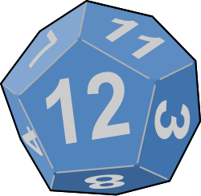
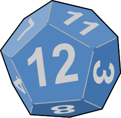

2 Loops, Conditional Statements, and Simulation
2.1 Before you start
- Compare your submission for last week’s coursework with the solution that is on moodle. Look for differences. Make sure to integrate any improvements in style into this week’s code.
- Revise the Summary sections on Data Manipulation and Basic Plots from last weeks Lab. Also scan through the section on Logical Comparisons. You will be making use of this knowledge this week.
- As usual, to save the code you write for this lab, create a new R notebook (or script) in your R progamming folder, on your H drive,
- Write a few introductory comments at the top stating that this script covers the basics of looping, writing conditional statwments, and simulating probabilities.
- Add your favourite libraries:
Or indeed,
- As you work through each section in the lab notes, consider adding a section break in your script. Note that in an R script the new sectioning markup in RStudio works by detecting the name within
# ----such as
as a section title in your script. You can then use RStudio editor controls to jump to different places in your script.
Or use markdown section headings in your R markdown notebook, e.g.
# Level 1 heading
## Level 2 heading- For each of the exercise questions consider starting a new script entirely.
- The purpose of this lab is to get you writing and thinking about
forloops and conditional statements, also known asifstatements. The second half of the lab focuses on probability simulation.
2.2 Loops
Wrapping a block of code inside a for loop, means that the code can
be repeatedly executed. Because of this, a for loop is classified as an
iteration statement; we repeatedly iterate over the same code, with, typically,
only one or two parameters changing each time.
For instance, a for loop can be used to make the following
sequence of numbers. Can you see the pattern?
1, 1, 2, 3, 5, 8, 13, 21, 34, 55, 89, 144, …
The sequence is known as the Fibonacci sequence which is calculated as follows; starting with 1 and 1, each subsequent number is the sum of the previous two. We will use this sequence as an example for learning about loops in R.
First, we will need to cover another way to pick out individual elements
from a vector. We have seen in previous labs, that we can use
filter() to reduce a data frame. And we have seen that we can pass
a logical vector (a vector containing a series of TRUE and FALSE values)
to select out elements of a different vector:
## [1] TRUE TRUE TRUE FALSE FALSE FALSE## [1] 0 1 2Here, we will be using the index method. In your script, store the first six numbers of the Fibonacci sequence in a vector, and run this.
Now, in order to access the third element, we use square brackets:
## [1] 2In order to extract a larger subset we specify a vector of indices, or we can use the colon shortcut:
## [1] 2 3 5## [1] 2 3 5To generalise, if x is a vector, and i is a positive
integer, then x[i], will be the ith element of x.
And if y is a vector of positive integers, then x[y]
gives the corresponding elements of x as a vector (note that some programming languages like python are zero based which means the first element of a vector is referred to as x[0]).
2.2.1 Writing a for loop
We can use a for loop to calculate, say, the first 100 numbers
of the Fibonacci sequence. In order to do this, we first need to understand
two things;
- that this particular sequence has a recursive property, and
- loops are one way in which we can implement such properties.
What do we mean by recursive? Well, instead of writing out the Fibonacci as just a sequence of numbers, we could instead use algebra:
1, 1, 2, 3, 5, 8, 13, 21, 34, 55, 89, 144, …
\(r_1\), \(r_2\), \(r_3\), \(r_4\), \(r_5\), \(r_6\), \(r_7\), \(r_8\), \(r_9\), \(r_{10}\), \(r_{11}\), \(r_{12}\), …
We already stated that, after the first two numbers, each subsequent number is the sum of the previous two. Written mathematically this looks like:
\[ r_{i} = r_{i-1} + r_{i-2} \quad \text{for}\quad i > 2. \]
So, the idea is to write code that lets i go from 3 up to 100,
and as it does so, we calculate the ith value of the Fibonacci sequence,
storing the results in a vector:
# parameters
n <- 100
r <- c(1, 1) # first two values
# Fibonacci algorithm
for (i in 3:n) {
r[i] <- r[i-1] + r[i-2]
}Before you run the script, let us examine what is happening line-by-line.
The two lines under the heading # parameters set-up the
workspace; n contains the how many numbers we want to generate,
and r initialises the sequence.
The next section defines the Fibonacci sequence using a for loop.
There are two parts to specifying a for loop. There is the index
which is specified in the round brackets, and then there is the code to be
repeated between the curly brackets:

When specifying the index we use the phrase in rather than
a equals symbol.
If everything goes well, when you run the code your r vector
should now contain 100 elements, you should check this. Also check some
of the elements against the sequence stated above. For instance the 12th
number should be 144.
2.2.2 Population growth
The Fibonacci sequence might seem a little too abstract of a concept to justify why you should be interested in loops. So, let us take another example; wildlife population growth models.
Wild animals typically go through three stages as part of their life-history; juvenile, subadult, and adult. With juveniles being defined as those being born within one time-period (typically a year). Subadults are no longer juveniles, but still remain non-reproductive (1 to 2 years old). And adults being the reproductive members of the population (2 or more years old).
The reason why we separate juveniles and subadults, is that juveniles often have a much lower rate of survival than subadults. With adults having an even greater rate of survival year-on-year, than the other two.
So, with population growth modelling, the idea is that given a starting size for each of these subgroups, the survival/death rate of each subgroup, and the reproductive rate of the adults, we should then be able to simulate what we expect to happen to the subpopulations over time.
To keep track of the size of population subgroups, we let \(J\), \(S\) and \(A\) represent the size of the juveniles, subadults, and adults, respectively. Each of these numbers will change over time, such that \(J_t\) will represent the size of the juvenile group at time \(t\).
To begin specifying models for how the subgroups change over time, let us start with the easiest, the transition from Juvenile to Subadult: \[ S_{(t+1)} = p_0 J_t. \] Where \(p_0\) is the proportion that survive to the subadult stage. Similarly, we define the proportion of subadults that survive as \(p_1\), and adults as \(p_2\).

The number of adults at time \(t+1\) has two sources: \[ A_{(t+1)} = p_1 S_t + p_2 A_t. \] One way to read this is in the following way; the number of subadults that survived to adulthood plus the number of adults that have not died.
Finally, to model the juveniles, we need to know what proportion of the adults produce offspring, let this be represented by \(f\). So, that the juveniles at time \(t+1\) are estimated by the equation: \[ J_{(t+1)} = f A_t. \]
Collectively, these equations take the current sizes of each subgroup; \(J_t, S_t, A_t\), and then calculate their size one time-period from now.
To implement this in R, we will use a for loop. We will store population
sizes at each time in three vectors; J, S, and
A, representing juveniles, subadults and adults, respectively.
In order to give initial sizes to the populations, as well as numbers for the constants; \(p_0\), \(p_1\), \(p_2\), and \(f\), we need to look at a real-life case study. For this we look towards research on the Northern Spotted Owl which is a threatened species that lives and nests primarily in north west America, shown in Figure 2.1.
Noon and Biles (1990) extracted estimates for these constants from various field studies; \(p_0=0.11\), \(p_1=0.71\), \(p_2=0.94\), \(f=0.24\). These numbers apply to female owls only, which is a common convention in population studies of species which have a constant ratio of males and females. Thus, our \(J\), \(S\), and \(A\) parameters refer only to the number of females at each time period.
Figure 2.1: Northern spotted owl, a near threatened species whose wingspan is approximately one metre.
To implement the population growth model of female northern spotted owls, we have several tasks in front of us:
Start a new script. Add a series of comments at the top outlining what the script will do.
Define the number of years we wish to project for.
Define the constants from the text above as objects.
Create three vectors to store the population sizes of each of the age groups. At the start, the vectors should only contain the following initial population sizes:
- Construct a
forloop with an index to represent time:
- Put the three population equations inside the for loop, using the index to pick out appropriate elements of the vectors. And store our new estimates. For example, adding the subadult equation would look like:
for (t in 1:(years-1)) {
# subadult equation
S[t+1] <- p0*J[t]
# adult equation goes here
# juvenile equation goes here
}Complete for the other subgroup equations.
- Create a data frame called
owl_popwith three variables;time,group, andsize. Each row should contain the size at a single time point for one of the three subpopulations (juvenile, subadult, and adult), such that it looks like this:
nrow(owl_pop)
[1] 60
head(owl_pop)
time group size
1 1 J 1200.0000
2 2 J 480.0000
3 3 J 587.5200
4 4 J 574.7616
5 5 J 549.2730
6 6 J 527.3291To do this you will:
- Need to use the
rep()function, check it’s help page for details. - Make sure
groupis a factor with sensible labels. - Ask us for help.
- Create a plot using
ggplot()andowl_popshowing the changes in the three subpopulations over time. Things to consider:
- How do you plot lines instead of points?
- How do you tell ggplot to plot separate lines for each of the three groups in your data?
- Are you happy with your axis labels?
Your plot should look something like this:

2.2.3 When not to loop
We have used for loops to generate data based on a model. Each new value we calculated was based on at least one previously calculated value. This is, pretty much, the only circumstances in which for looping is definitely the answer. Often with data problems it is very tempting to create a solution using a for loop, but what you might find, especially in R, is that your solution takes a long time to run. When this happens there is frequently an alternative solution which involves using vectors instead. For a trivial example, say, we have an incredibly long vector which want to square:
# for-loop method
square_x_loop <- function() {
x <- 1:10^7 # 10 million
for (i in 1:length(x)) {
x[i] <- x[i]^2
}
return(x)
}
# vector method
square_x_vector <- function() {
x <- 1:10^7 # 10 million
x <- x^2
return(x)
}
# how much time does each method take to execute?
system.time(square_x_loop())## user system elapsed
## 0.762 0.020 0.782## user system elapsed
## 0.033 0.024 0.057The for loop took longer than the vector approach. This is because of the way R is optimised for thinking with vectors, rather than thinking about processing individual values. With other more low-level programming languages you might not see any difference in terms of speed between these two methods, in fact it might even be the other way around.
However, you should only consider a different approach when your loop seems to be taking a long time, and in these cases there will usually be a better way to code the solution. In all other cases where looping seems to solve your problem in a timely manner this is good enough.
2.2.4 Summary
- Elements of vectors can be picked out of the vector using one or more indexes:
## [1] "c"## [1] "b" "c" "d"## [1] "a" "e"A
forloop repeatedly executes a block of code. The number of repetitions is based on the size of the sequence passed to the index. The index itself is an object which can be used within the block of code.Example:
Recursive equations, or problems that involve calculating values based on previous values in the sequence are solved most excellently with
forloops.If you write a loop and it executes very slowly, cancel it, and see if there is a better approach. There usually is, and it will most likely involve vectors. \end{enumerate}
2.3 Conditional statements
Like all other programming languages, R can execute a block of code conditional on whether or not a statement is true.
This is done by using the if command, here is one in action:
for (animal in c("human", "cat", "turtle", "zebra")) {
# decide on food given to type of animal
if (animal == "cat") {
# when TRUE run this
food <- "fish"
} else {
# when FALSE run this
food <- "pizza"
}
# compose message
msg <- paste("Give a", animal, "some", food, "for lunch.")
print(msg)
}## [1] "Give a human some pizza for lunch."
## [1] "Give a cat some fish for lunch."
## [1] "Give a turtle some pizza for lunch."
## [1] "Give a zebra some pizza for lunch."Which generates a message for each animal.
The structure of an if statement is very similar to that of
a for loop. The code they execute (or do not execute) lies
between curly brackets. Whether or not an if statement executes
a particular block of code depends on the whether or not the
conditional statement is true or false.
If we wanted to also feed fish to turtles, and perhaps give something more appropriate to zebras such as grass, then modify the above code so it reads:
for (animal in c("human", "cat", "turtle", "zebra")) {
# decide on food given to type of animal
if (animal == "cat" | animal == "turtle") {
food <- "fish"
} else if (animal == "human") {
food <- "pizza"
} else if (animal == "zebra") {
food <- "grass"
} else {
food <- "soup"
}
# compose message
msg <- paste("Give a", animal, "some", food, "for lunch.")
print(msg)
}## [1] "Give a human some pizza for lunch."
## [1] "Give a cat some fish for lunch."
## [1] "Give a turtle some fish for lunch."
## [1] "Give a zebra some grass for lunch."See how the printed messages have changed.
An example in statistics when we would use an if statement is when we are creating a basic probability event simulator, such as rolling dice, or dealing cards. To simulate rolling a six-sided die we would write a function which would:
- Draw a random number between 0 and 1. We use
runif()for this. - Use if statements to workout the dice face based on the random number.
- Return the dice roll result back to the user.
In your script, type and run:
roll_d6 <- function() {
# draw random number between 0 and 1
p <- runif(1)
# allocate dice face
if (p < 1/6) {
face <- 1
} else if (p < 2/6) {
face <- 2
} else if (p < 3/6) {
face <- 3
} else if (p < 4/6) {
face <- 4
} else if (p < 5/6) {
face <- 5
} else {
face <- 6
}
return(face)
}
roll_d6()## [1] 4The function currently has no arguments, this is because everything about
rolling a single dice is fixed. A feature that we could add is to allow multiple dice
rolls with one call to roll_d6(), though we should assume by default
that the user just wants a single roll. Modify roll_d6() to allow
for this by looping over the existing code within the function n times and
storing the results:
roll_d6 <- function(n=1) {
# empty vector of results
results <- c()
# allocate dice face for each probability
for (i in 1:n) {
p <- runif(1)
if (p < 1/6) {
face <- 1
} else if (p < 2/6) {
face <- 2
} else if (p < 3/6) {
face <- 3
} else if (p < 4/6) {
face <- 4
} else if (p < 5/6) {
face <- 5
} else {
face <- 6
}
# store result
results[i] <- face
}
return(results)
}
Figure 2.2: An example of simulating 20 dice rolls.
Play with this function; simulate a number of dice rolls and plot a graph of the results. Alter the number of dice rolls simulated, and see what it does to the graph. Note that the dice results are perfectly random, and any variation you see between the frequency of certain numbers is purely due to chance.
2.3.1 Summary
You can have execute a single line of code or block of code based on a certain logical comparison being true. This is done using an if statement which can take the following form:10
2.4 Probability and Simulation
This section utilises the probability concepts you have been introduced to in other modules, and assumes that you are familiar with the concept of a random variable; mainly that it is a quantity or measure that is likely to vary if the process being observed was repeated. And that we can use probability distributions to describe variables.
Think about how you would answer the following questions if asked:
- What is a random event?
- What is a random number?
- What are some common probability distributions? And what types of data or processes might be described by them?
In this section we will cover several topics:
- Why we use simulation.
- How to draw random samples from a set.
- How to draw values from a probability distribution.
- How simulation can show the law of large numbers (LLN) in action.
Firstly, a random event is simply an event for which we do not know, for certain, what the outcome will be, though we may know the probability of each possible outcome. Examples are; flipping a coin, playing rock paper scissors, rolling dice, number of offspring, gender of the offspring.
 

2.4.1 Random sampling
Randomly sampling from a discrete set of values in R is easy! To do this we use the sample() function, which resamples values from a vector, with or without replacement. It has a number of different uses. In the list below n is an integer, x is a vector, p is a vector probabilities with the same length of x:
sample(n)creates a vector of integers from 1 ton, in a random ordersample(x)randomly permutexsample(x, replace=TRUE)a bootstrap samplesample(x, n)samplentimes fromxwithout replacementsample(x, n, replace=TRUE)sample n times fromxwith replacementsample(x, n, replace=TRUE, prob=p)same as above, but sample each element ofxwith probabilityp
The last three of these provides us with different ways of sampling from a finite discrete set of values.
2.4.2 Rock, Paper Scissors
To begin implementing Rock, Paper, Scissors in R, we need to specify the finite set of choices. Then sample once from it for each player:
# set of possible choices
x <- c("Rock", "Paper", "Scissors")
# players, make your choice
p1 <- sample(x, 1)
p2 <- sample(x, 1)
p1## [1] "Rock"## [1] "Scissors"The values of p1 and p2 show who won.
If you want to do best of 3 do:
# players, make your choice (three times)
p1 <- sample(x, 3)
p2 <- sample(x, 3)
# best of 3
rbind(p1, p2)## [,1] [,2] [,3]
## p1 "Paper" "Scissors" "Rock"
## p2 "Paper" "Rock" "Scissors"2.4.3 Simulating the law of large numbers
The law of large numbers is a theorem from mathematics which states the following; if a random process could be repeated many, many, many times, the long-run proportion (or fraction) of times that a particular outcome happens stabilises. This means that for a small number of repetitions, we can expect to see a large amount of variability regarding the proportion that hit. Whereas, for a large number of repetitions, the proportion of ``hits’’ would be more stable (less varied).
For example, when looking at science GCSE results from schools, we would expect to see that for the small schools (often in a quaint village), the proportion of the children obtaining a grade C or above would vary wildly from small school to small school. However, looking at the same proportion but for big city schools, we would expect to see less variation in the proportion from big school to big school. Let us put this in to action.11
Start a script or rmarkdown file, with a title-section including information that we are simulating the law of large numbers. With the particular application being that we are looking at how the variability in the proportion of children obtaining a science GCSE grade C or above within a school is dependent on the size of the school.
To start, we are going to use the rbinom() function to simulate one schools worth of GCSE results. This function is one of the standard functions that comes with R (no need for packages) and allows us to randomly draw from a binomial distribution.
Looking at the help page to understand the arguments of rbinom(), set the size of the trial to be \(30\) (this is the size of one year group in our small, quaint school). Set the probability of success to \(0.59\), this is the probability of a grade C or above.
And set the number of observations to be one, as we’re only interested in looking at one small school right now.
When you send this command to the console, it should return a count. To express this as a proportion, update your command to divide by the size of the school.
Now, we are interested in the results of \(100\) schools of this size, increase the number of observations accordingly. Create a data frame with one column containing these results, and a second column containing the size of the schools.
n_obs <- 100
size <- 30
pr <- 0.59
tiny_schools <- data.frame(
sci_prop = rbinom(n_obs, size, pr),
size = size
)Repeat the above process, but create a new data frame for each of the
following sized schools; small (size of \(100\)), medium schools (size of \(200\)),
large (size of \(500\)), and mega schools (size of \(1000\)). Combine the
rows of each of these data frames into one data frame by using rbind()
as follows:

Figure 2.3: Variation in proportion due to size of the year group. Demonstrating the law of large numbers.
Create a ggplot comparing school size to the proportion of those of who got grades C and above. Check if it looks similar to Figure 2.3.
How do you interpret this plot? Well, for a start, we know from our code that all children across all schools had the same probability of getting a grade C or above, so no school is inherently doing anything different in preparing it’s children for the GCSE exams. In fact, the only thing we allowed to vary was the size of the school. So the variation we are seeing in regards to the proportion of students who obtained a grade C or above within each school is related to the size of the year group at that school. And we see that the big year groups, tend to be closer to the true proportion than the smaller groups. This is the law of large numbers.
If you did not know about the law of large numbers, and you were to simply look at the top 25 schools, then you would likely conclude that small schools are better than big schools, as the top ranks are dominated by the smaller-sized schools. We can see the top 25 schools with:
## sci_prop size
## 1 633 1000
## 2 631 1000
## 3 616 1000
## 4 614 1000
## 5 611 1000
## 6 611 1000
## 7 611 1000
## 8 611 1000
## 9 611 1000
## 10 609 1000
## 11 608 1000
## 12 606 1000
## 13 605 1000
## 14 604 1000
## 15 603 1000
## 16 603 1000
## 17 602 1000
## 18 602 1000
## 19 602 1000
## 20 602 1000
## 21 601 1000
## 22 600 1000
## 23 600 1000
## 24 599 1000
## 25 599 10002.4.4 Probability distributions
R provides built-in functions that allow us to compute the density, cumulative probability, quantiles and random numbers from many standard probability distributions. Here we will look at the normal distribution and the binomial distribution, but other distributions follow exactly the same pattern. Table 2.1 contains a list of random generator functions for some of the standard probability distributions. The first parameter of these functions is always n which is the number of random values that you want to generate.
| Probability dist. | Function |
|---|---|
| Beta | rbeta(n, shape1, shape2) |
| Binomial | rbinom(n, size, prob) |
| Chi-squared | rchisq(n, df) |
| Exponential | rexp(n, rate) |
| Gamma | rgamma(n, shape, rate) |
| Normal | rnorm(n, mean, sd) |
| Poisson | rpois(n, lambda) |
| Student-t | rt(n, df) |
| Uniform | runif(n, min, max) |
To begin experimenting with these functions, look at the following two webpages:
http://nemeth.shinyapps.io/rnorm
http://nemeth.shinyapps.io/rbinom
On each of these pages you can adjust the parameters of the random functions and see the results instantly. Note these webpages are Shiny Apps which are simple to create in RStudio. We will meet these again later in the course.
To directly simulate random values in R:
## [1] -0.009750928 -0.302842775 1.816186604 0.236721963 1.019409887
## [6] -0.945510628 0.428613459 1.053228940 0.735166603 -1.091237885## `stat_bin()` using `bins = 30`. Pick better value with `binwidth`.
If you rerun these two commands repeatedly you will notice that the \(10\) values you draw each time changes.
You may have noticed that all of the random functions start with r and follow with an abbreviation of the distribution name. Replacing r with d, p, q will give you the names of the functions that allow you to calculate density values, cumulative probabilities, and quantiles, respectively.
2.4.5 Repeating your simulation
The numbers produced by rnorm(), rbinom(), and the other r... functions are actually pseudo-random numbers. They are random enough rather than genuinely random.
The state of the random generator is controlled by the object .Random.seed which contains a list of integers:
## [1] 10403 518 -241867934Whenever sample() or an r function is run, the current state of .Random.seed is used.
In order to re-run a simulation, we need to control the starting point of .Random.seed this can be done via set.seed() like so:
## [1] -0.3906706 -1.8656330 -0.2399937 -0.8530353## [1] -1.1927956 0.3692942 -1.4857336 -0.3040490## [1] -0.3906706 -1.8656330## [1] -0.2399937 -0.8530353You would typically set your seed when you are performing simulations and wish to make your work reproducible. This allows others to rerun your code on their computers and obtain the same results. Without setting our seeds to be the same, even if we run the same code, the numbers we would generate would be different.
2.4.6 Densities
The density function is probably the least used in practice out of the four function types. But if, for instance, you wanted to draw a probability distribution, such as the normal distribution then it could be quickly done like this:

For discrete distributions, where variables can only take distinct values, it is more appropriate to draw a bar chart rather than a continuous line. Here is a binomial distribution with \(size=10\) and \(p=0.33\):
x=1:10
binom <- data.frame(x=x,
db=dbinom(x, size=10, prob=0.33))
ggplot(binom,aes(x=factor(x), y=db)) + geom_bar(stat="identity")
2.4.7 Probabilities
The pnorm() and pbinom() functions can be used to calculate probabilities. For example, to calculate the probability of observing \(X\) being less than 2 when \(X\) is said to follow a standard normal distribution:
\[
\text{Pr}(X \leq 2) ~~~\text{where}~~~ X \sim \text{Normal}(0, 1),
\]
we would use pnorm() such that
## [1] 0.9772499Similarly, to calculate the probability of flipping a coin ten times and observing at least 3 heads:
## [1] 0.9453125The p functions compute the probability for a given number or vector of numbers. These functions also goes by the ominous title of the “Cumulative Distribution Function”. This is because the word cumulative refers to the fact that we always calculate the probability of less than or equal to our number occurring.
When you carry out statistical tests such as a t-test or chi-sqaured test, once you have calculated your summary statistic, you can then use pt() or pchisq(), respectively, to calculate your \(p\)-value. As performing these tests is a common practice in statistics we obviously have functions that will do all of this for us (namely t.test() and chisq.test(), but inside these functions they are using these p...() functions.
Also note that when calculating \(p\)-values when you want the upper tail (which is most of the time) it is better practice to code:
## [1] 0.9453125This is because the lower.tail option is better at handling cases at the extremes of the distributions.
2.4.8 Quantiles
The quantile functions are the opposite to the probability functions.
To use qnorm() we have to specify a probability, and it will return
the corresponding value of \(X\):
## [1] 1.959964To rewrite this mathematically: \[ \text{Pr}(X \leq 1.96) = 0.975 ~~~\text{where}~~~ X \sim \text{Normal}(0, 1). \]
Similarly, if we let \(Z \sim \text{Normal}(1, 9)\). To find the value \(q\) (quantile) such that Pr\((Z \leq q)\) is \(0.05\) type:
## [1] -3.934561These functions also take a vector of quantiles. For example to find Pr\((Z \leq -3.9)\), Pr\((Z \leq 0)\), and Pr\((Z \leq 7)\) type:
## [1] 0.05119945 0.36944134 0.977249872.4.9 Summary
Simulation is the process of using a computer to generate random numbers to create data. We can simulate data from discrete and continuous probability distributions.
R provides functions for generating random numbers from the common probability distributions. All functions return a vector of
nrealisations. Table 2.1 contains a list of some these functions. Note that R does not necessarily use the same parameterisation for these probability distributions as you will see in your courses, or in popular stats text books. Therefore always check the help page of the function to confirm its particular parameterisation.
Example:
## [1] 0 0 1 0 0 0 0 0 0 1## [1] 46 46# draw from 5 values from a standard normal distribution
# Standard normal distribution N(0,1^2)
# mean = 0 and standard deviation = 1
rnorm(5)## [1] -0.1047152 0.9304077 1.4534803 -0.9740542 -0.4645038To ensure your simulations are reproducible use
set.seed()to specify a starting point for the random number generator.The first letter of all the functions in Table 2.1 is
rwhich stands for “random”. For each probability distribution there are also density (d), quantile (q), and cumulative probability functions (p).
For example, say, \(X \sim \text{Normal}(6, 5)\), then to calculate the probability that we observe \(x\) being less than or equal to \(3\), \(\text{Pr}(X \leq 3)\):
## [1] 0.08985625Similarly, if we wanted to calculate what quantile, \(q\), of \(X\) would correspond to the following: \[ \text{Pr}(X \leq q) = 0.975 \] then we would use the following command:
## [1] 10.382612.4.10 Exercises
- Generate some random data and calculate quantile summary statistics:
- Set your seed to be
59810. - Simulate 100 values from a random normal distribution with mean 25 and standard deviation 8. Store these in a vector.
- Use
quantile()to calculate the 25% and 75% quantiles for your vectors. d.Compare these against the 0.25 and 0.75 quantiles calculated usingqnorm().
- Note that differences in quantile values are due to your vector containing randomly simulated values.
- Quantiles from
qnorm()should be 19.60408 and 30.39592. - Quantiles from your vector should be 19.206859 and 31.505227.
- Play with random generator functions for other probability distributions:
2.5 Combining Loops and Simulation
The population model discussed in the Loop section is considered to be a deterministic model as there is no random variation, it is simply a set of equations we evaluate at each time point. What we can do is give this model a random component. We do this by changing the way we think about individuals in the population. For example, instead of saying 0.24 of females produce an offspring, we know say each female has a probability of 0.24 of producing an offspring. So, the deterministic model looked like this:
# time period
years <- 20
# constants
p0 <- 0.11
p1 <- 0.71
p2 <- 0.94
f <- 0.24
# initial population sizes
J <- 1200
S <- 800
A <- 2000
# population growth model
for (t in 1:(years-1)) {
S[t+1] <- p0*J[t]
A[t+1] <- p1*S[t] + p2*A[t]
J[t+1] <- f*A[t]
}
# store the results
owl_pop <- data.frame(
time = rep(1:years, 3),
group = rep(c("J", "S", "A"), each=years),
size = c(J, S, A)
)
# plot the results
ggplot(owl_pop) +
geom_line(aes(x=time, y=size, colour=group, linetype=group)) +
theme(legend.position="top")Essentially, we want to replace the determinisitc equations in the for loop with calls to rbinom(). For example, for the subadult population, at each iteration we want to simulate one binomial sample with a size of J[t] with probability of success equal to p0.
Make these changes, and rerun the whole script. If you repeatedly rerun the script you will generate slight variations on the plot, this is due to the random component. Finally, set your seed to 87856, rerun your script, and check if the plot you produce matches Figure 2.4.

Figure 2.4: Stochastic population growth model over the next 20 years for the Northern spotted owls. Random seed was set to 87856.
The condition statements in
ifbrackets are logical comparisons that return a singleTRUEorFALSE. Theelse ifandelseportions are optional, and will only be considered if previous conditional statements have all returnedFALSE.↩Without knowing anything about each child, we assume that they all have the same probability of obtaining a grade C or above. In reality, even knowing a child’s gender means that we can start to adjust this probability. With females being more likely to obtain a grade C or above than males. http://gu.com/p/4vqfv.↩